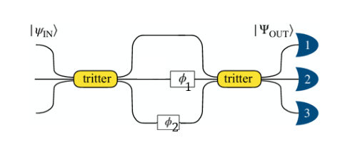

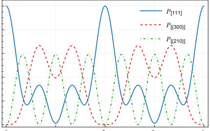
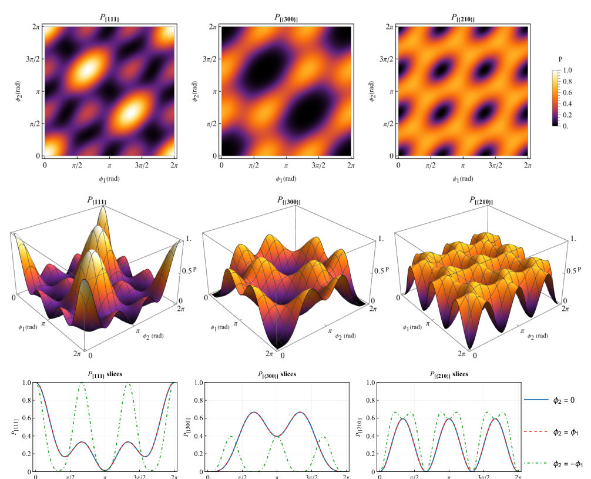
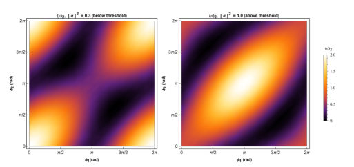
Authors: Niall F. Robertson, Andrea D'Urbano, Anton Dekusar, Max Rossmannek, Eric D. Switzer, James R. Garrison, Nicolas Lorente, Igor Pasichnyk, Paolo D'Alberto, Muhammad Osama, Zachary Streeter, Yasuko Eckert, Constantinos Evangelinos, Sergiy Zhuk
Type: both · Category: numerical methods · PDF: https://arxiv.org/pdf/2609.05024v1
Analysis basis: full PDF text, analyzed in chunks
Topic relevance: 🔥 methods for driven-dissipative 5/5 · QC/QI experiment 3/5 · driven-dissipative phase transition 3/5 · quantum measurements 3/5 · Keldysh / 2PI / non-Gaussian methods 1/5 · analog quantum simulation 1/5 · correlated / nonlocal dissipation 1/5 · non-equilibrium universality 1/5
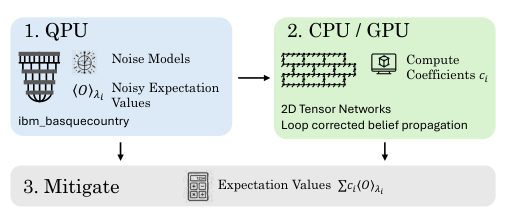
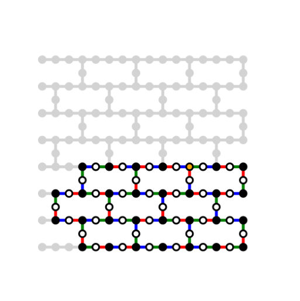
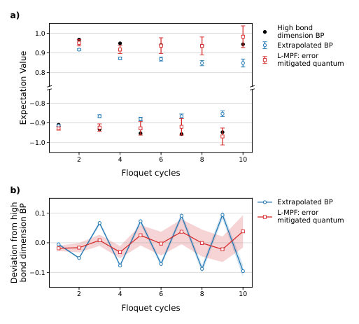
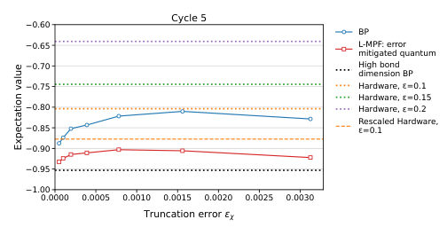
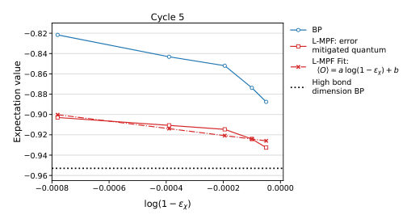
Summary. This paper introduces Lindblad Multiproduct Formulas (L-MPF), a novel quantum error mitigation technique that combines tensor network contractions with belief propagation. It allows for the estimation of noise-free quantum expectation values by calculating optimal linear combinations of noisy measurements. The method is demonstrated on a 2D discrete time crystal model, showing its utility in analyzing complex quantum dynamics on near-term quantum hardware.
Why it may be interesting. It provides a powerful, computationally structured framework (tensor networks) to tackle the notoriously difficult problem of noise mitigation in open quantum systems simulations, which is highly relevant to modern quantum hardware characterization.
Main problem. The paper addresses the challenge of accurately estimating expectation values of observables in noisy quantum circuits governed by Lindblad dynamics.
Main result. The proposed Lindblad Multiproduct Formulas (L-MPF) technique successfully mitigates noise by combining tensor network calculations with quantum measurements, showing potential advantages over existing methods.
Method. L-MPF uses two-dimensional tensor networks contracted with loop-corrected belief propagation to classically determine optimal linear combinations of noisy measurements, which are then used to estimate the noise-free expectation value.
Model / system. The method is applied to a model of two-dimensional discrete time crystals (DTCs) and is tested on a quantum computer (ibm_basquecountry) with 65 qubits in a heavy-hexagonal topology.
Key observables. Noiseless expectation value $\langle O(t) angle_{\lambda 0}$, order parameter $\Delta(t)$, and the estimated error bar.
Important parameters / regimes. Noise rates ($\lambda_i$), Floquet cycles, and the tensor network truncation error ($\epsilon_\chi$).
Assumptions / limitations. The workflow assumes that the required coefficients can be calculated efficiently using tensor networks, and it compares the performance of different noise amplification schemes (Ergodic vs. PEA).
Figures summary. Figures compare raw hardware expectation values using ergodic vs. PEA amplification; they also show convergence analysis of L-MPF results against various extrapolation methods as a function of truncation error ($\epsilon_\chi$).
Paper structure. The paper introduces the L-MPF technique, details its workflow involving QPU measurement and CPU/GPU tensor network computation, applies it to DTC models, and compares the performance and convergence of different noise amplification strategies.
We introduce Lindblad Multiproduct Formulas: a quantum error mitigation technique that uses two-dimensional tensor networks contracted with loop-corrected belief propagation. The quantities required to implement the error mitigation scheme that are evaluated with tensor networks can be less computationally expensive to calculate than the expectation values themselves, thus allowing for the possibility of applying our method to certain systems for which tensor network methods may struggle to calculate the observable quantities of interest. The workflow incorporates Clifford rescaling techniques and outputs an estimated error bar. We apply our method to a model of two-dimensional discrete time crystals studied previously and implement it on $65$ qubits arranged in a $3\!\times\!3$ heavy-hexagonal topology on the quantum computer ibm_basquecountry. We show that a GPU implementation of the classical part of our workflow achieves a speedup of up to $5.6\times$.
Authors: Hakan Yeler, Özgür Çakır
Type: theory · Category: strongly correlated electrons · PDF: https://arxiv.org/pdf/2609.05137v1
Analysis basis: full PDF text, analyzed in chunks
Topic relevance: 🔥 methods for driven-dissipative 4/5 · analog quantum simulation 3/5 · correlated / nonlocal dissipation 3/5 · driven-dissipative phase transition 3/5 · non-equilibrium universality 3/5 · quantum measurements 2/5 · Keldysh / 2PI / non-Gaussian methods 1/5
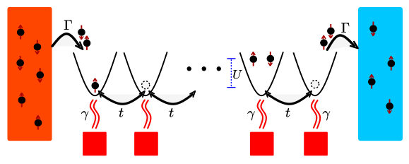
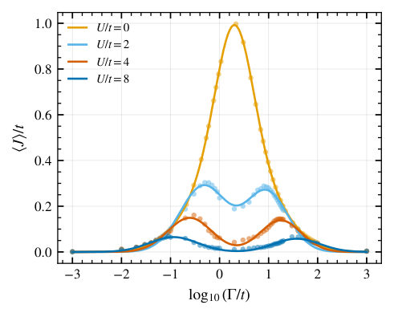
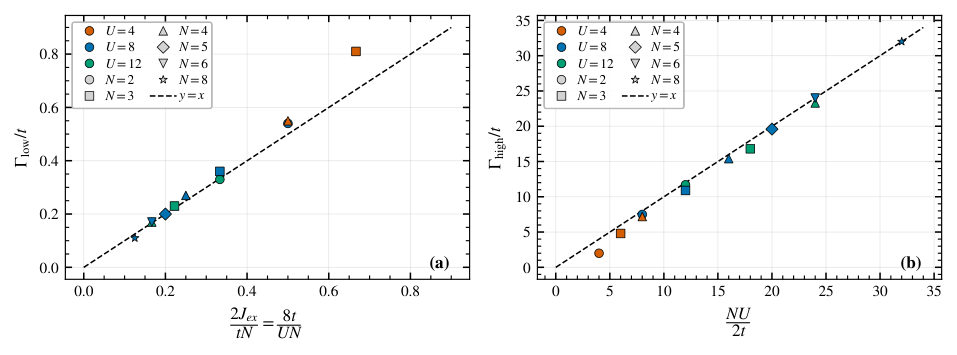
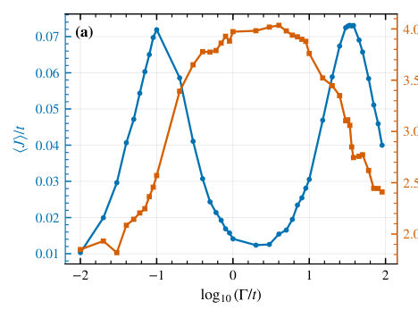
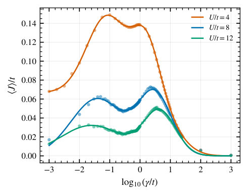
Summary. This paper analyzes quantum transport in a strongly correlated Fermi-Hubbard chain driven by boundaries and subjected to local dephasing. The authors find that dephasing does not simply suppress current but instead induces two separate, distinct regimes of transport enhancement. These regimes are linked to specific many-body processes, such as intra-band and inter-band energy redistributions, highlighting the complex interplay between environment, correlation, and quantum dynamics.
Why it may be interesting. This work provides a detailed, many-body perspective on how environmental coupling (dephasing) can actively enhance transport in strongly correlated quantum materials, revealing distinct physical mechanisms for this enhancement.
Main problem. The study investigates environment-assisted quantum transport (ENAQT) in a strongly correlated, boundary-driven Fermi-Hubbard chain, focusing on how local dephasing affects current flow.
Main result. The system exhibits two distinct dephasing-induced transport-enhancement regimes, which are attributed to different many-body redistribution processes occurring within and between Hubbard bands.
Method. The dynamics are solved using the Time-Evolving Block Decimation (TEBD) method applied to the Lindblad master equation, supplemented by analytical derivations for scaling laws.
Model / system. The model is a one-dimensional Fermi-Hubbard chain governed by a Hamiltonian and subjected to boundary reservoirs and local dephasing baths, described by the Lindblad master equation.
Key observables. Steady-state particle current (J), doublon number, and the optimal dephasing rate ($\gamma_{high}$).
Important parameters / regimes. Interaction strength ($U$), hopping ($t$), boundary driving rate ($\Gamma$), and dephasing rate ($\gamma$).
Assumptions / limitations. The analysis relies on solving the Lindblad master equation via TEBD, and later sections use adiabatic elimination or phenomenological two-process models for scaling derivations.
Figures summary. Figures illustrate the current dependence on driving rate ($\Gamma$) showing two resonances, and the scaling of these resonances and enhancement rates ($\gamma_{low}, \gamma_{high}$) with system size ($N$) and interaction strength ($U$).
Paper structure. The paper progresses from establishing the basic model and observing two current resonances ($\Gamma_{low}, \Gamma_{high}$) in the absence of dephasing, to analyzing the effect of dephasing ($\gamma$), identifying two distinct enhancement regimes, and finally deriving scaling laws for the optimal dephasing rate.
We study steady-state transport in a one-dimensional Fermi-Hubbard chain coupled to particle reservoirs at the boundaries and to local dephasing baths at each site, using the time-evolving block decimation (TEBD) method to solve the Lindblad master equation. In the absence of dephasing, the current exhibits two well-separated maxima as a function of the boundary driving rate, reflecting the distinct charge and spin energy scales of the strongly correlated regime. Upon introducing dephasing, we find two distinct dephasing-induced transport-enhancement regimes, in contrast to the single enhancement previously reported for spinless fermions. Analysis of the non-equilibrium steady state in the Hamiltonian eigenbasis reveals that the two regimes originate from distinct dephasing-induced redistribution processes: the first involves redistribution within the uppermost Hubbard band, while the second involves transitions between Hubbard bands. Our results demonstrate how many-body correlations shape the interplay between coherent driving, dephasing, and quantum Zeno physics in strongly correlated open systems.
Authors: Akoramurthy B, Surendiran B, Xiaochun Cheng
Type: theory · Category: other · PDF: https://arxiv.org/pdf/2609.04730v1
Analysis basis: full PDF text, analyzed in chunks
Topic relevance: 🔥 quantum measurements 4/5 · Tavis-Cummings & cavity-many-emitter 3/5 · analog quantum simulation 3/5 · correlated / nonlocal dissipation 3/5 · Dicke superradiance 2/5 · Full counting statistics 1/5 · driven-dissipative phase transition 1/5 · methods for driven-dissipative 1/5 · non-equilibrium universality 1/5
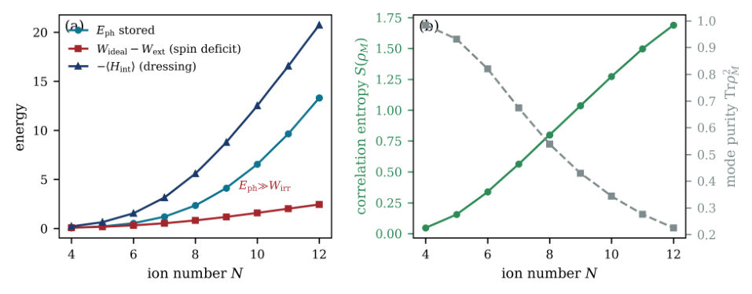
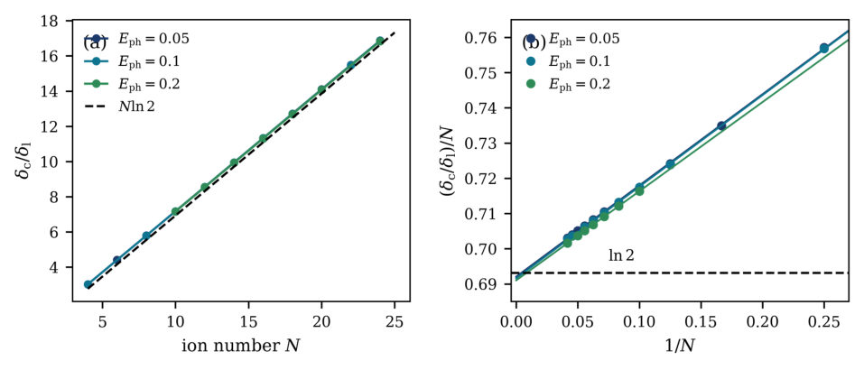
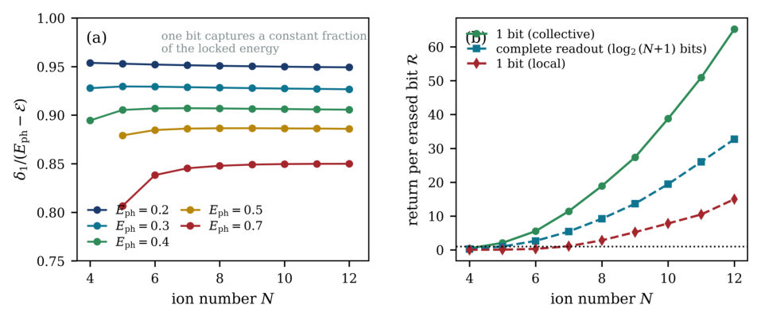
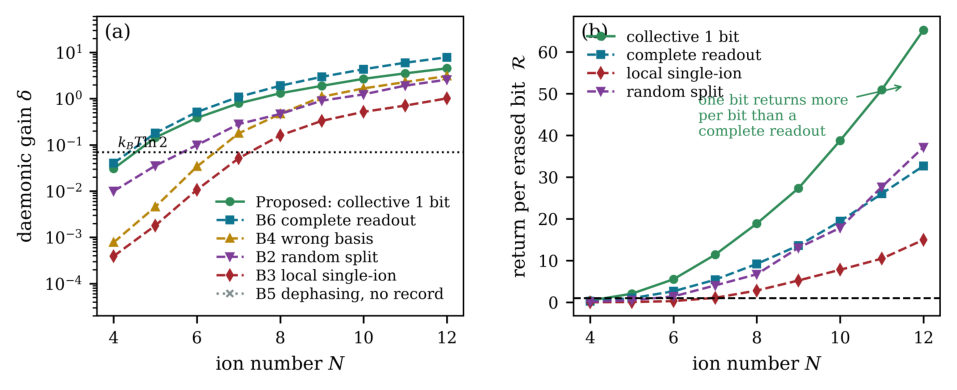
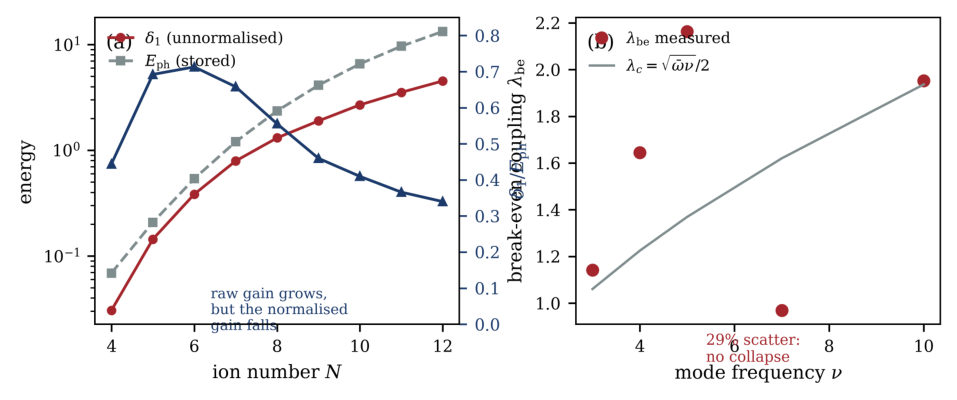
Summary. This paper investigates how much work can be extracted from a quantum battery using information gained from collective measurements versus local measurements. It finds that collective information provides a significant, system-size-dependent advantage, scaling as N ln(2) times more work per bit than local information. This highlights the fundamental physical advantage of exploiting global correlations in quantum energy harvesting.
Why it may be interesting. This work directly addresses quantum thermodynamics in many-body systems, providing quantitative metrics for how entanglement or collective correlations enhance work extraction beyond what local measurements can achieve.
Main problem. The paper quantifies the advantage of extracting work from a quantum battery by measuring the difference in extractable energy (daemonic ergotropy) when using collective versus local measurements.
Main result. One bit of collective information unlocks N ln(2) times more work than one bit of local information, demonstrating a strong, system-size-dependent advantage for collective measurements.
Method. The analysis compares two protocols under matched constraints (matched stored energy and matched information cost) by deriving scaling laws and performing double extrapolations.
Model / system. The system is a quantum battery modeled by N two-level ions coupled to a shared bosonic mode, described by a Hamiltonian resembling the Dicke model. The analysis focuses on energy extraction via measurement outcomes.
Key observables. Daemonic ergotropy ($\delta$), locked energy, and the ratio of work extracted ($\delta_c / \delta_l$).
Important parameters / regimes. The system size N, the bosonic mode frequency ($ u$), and the information content (constrained to 1 bit).
Assumptions / limitations. The comparison is strictly constrained by matching both the stored energy and the information cost (1 bit) between the collective and local measurement protocols.
Figures summary. Figures illustrate the linear scaling of the gain ratio with N ($\propto N \ln 2$), the constant fraction of locked energy recovered per bit, and comparisons between unnormalised and normalised gain.
Paper structure. The paper establishes the physical model, defines the daemonic ergotropy, compares the scaling of collective vs. local information extraction under matched constraints, derives the $N \ln 2$ scaling law, and discusses the implications for information efficiency.
Charging a quantum battery through a collective non-adiabatic stroke stores energy in a shared bosonic mode, but part remains locked in correlations with the collective spin and is inaccessible to cyclic unitaries acting on the mode alone. A demon holding one bit can unlock this energy, quantified by the daemonic ergotropy. We investigate the value of one bit and its dependence on where the information is obtained. Two protocols are compared at matched stored energy and matched information, using balanced two-outcome measurements carrying exactly one bit. We find that one bit about the collective coordinate unlocks N ln(2) times as much work as one bit about a single ion. For three stored-energy settings and N = 4-24, the measured scaling exponent is 0.990 +/- 0.043, while double extrapolation gives a prefactor of 0.69298 +/- 0.00044, within 0.02% of ln(2). To leading order, the daemonic gain equals nu mu^2 times the between-outcome variance of Jx, verified numerically to 1.3%. A balanced single-ion measurement resolves 1/4 of this variance, whereas a balanced collective split resolves (ln(2)/4)N. The microscopic origin of the prefactor remains open; a Gaussian median-split estimate of 1/(2pi) is excluded by 9%. One bit recovers a constant fraction of the locked energy independent of N and yields roughly twice as much work per bit as a complete readout, indicating strong diminishing returns. We also show that unnormalized gain comparisons can reverse the conclusion and that the break-even ion number does not collapse onto the Dicke superradiant threshold when the mode frequency is varied.
Authors: P. Zahalka, S. Huijser, A. Pancaldi, S. Kruger, X. Zhao, Z. Liu, I. Suleiman, R. Jensen, L. Stefan, A. Ludwig, V. Remesh, J. C. Loredo, P. Lodahl
Type: experiment · Category: quantum information and computing · PDF: https://arxiv.org/pdf/2609.05387v1
Analysis basis: full PDF text, analyzed in chunks
Topic relevance: 🔥 QC/QI experiment 4/5 · 🔥 quantum optics experiment 4/5 · interference shaping light 2/5 · quantum measurements 2/5 · analog quantum simulation 1/5
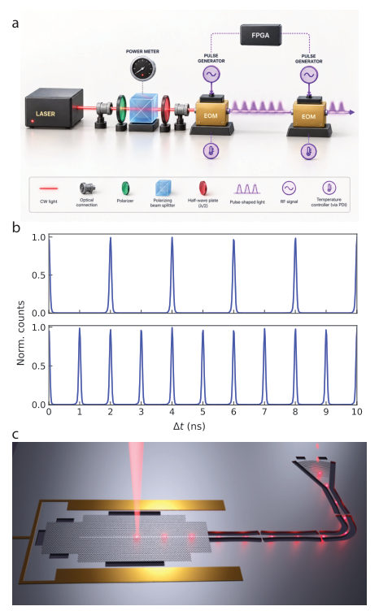
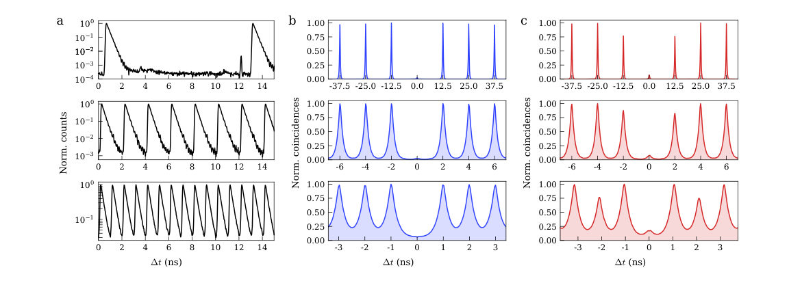
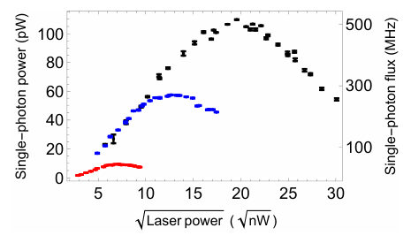
Summary. This paper presents an advanced, deterministic single-photon source based on a quantum dot coupled to a photonic crystal waveguide. The source achieves a record-high single-photon flux exceeding 500 MHz while maintaining high efficiency. This development is critical for advancing experimental quantum information processing by providing a reliable, high-rate quantum light source.
Why it may be interesting. This work provides a crucial experimental tool—a high-flux, high-purity single-photon source—that is foundational for implementing quantum information protocols in the lab.
Main problem. The field requires high-quality, high-rate single-photon sources for advanced quantum technologies like quantum key distribution and quantum computing.
Main result. The authors report a deterministic single-photon source achieving over 500 MHz in-fibre single-photon flux, which is the highest reported value.
Method. The source was characterized by measuring single-photon time traces, the second-order autocorrelation function g^(2)(0), and Hong-Ou-Mandel (HOM) visibility.
Model / system. The system utilizes a quantum dot (QD) single-photon source coupled to a photonic crystal waveguide (PCW) and is driven using carved laser pulses from a continuous-wave laser.
Key observables. In-fibre single-photon flux, optical power, g^(2)(0), and HOM visibility.
Important parameters / regimes. QD emission wavelength (933.1 nm), QD decay lifetime (220 ps), and excitation rates up to 1 GHz.
Assumptions / limitations. Direct measurement of source fiber efficiency using a power meter avoids the need for complex calibration of superconducting nanowire single-photon detectors.
Figures summary. Figure 1 shows the pulse-carving setup. Figure 2 presents single-photon metrics (time traces, g^(2)(0), V_HOM) at various rates. Figure 3 shows Rabi oscillations measured by a power meter.
Paper structure. The paper details the setup for generating high-rate single photons, presents measurements of key quantum metrics (g^(2) and HOM), and concludes by highlighting the practical advantage of direct power measurement for efficiency determination.
Advanced optical quantum technologies demands high quality quantum light generation at very high rates. Here, we report on a deterministic single-photon source that simultaneously combines high excitation rates with high system efficiency to reach over 500 MHz of in-fibre single-photon flux. The source delivers optical power of over 100 pW, as is measured with an off-the-shelf powermeter, enabling a simple and direct way of determining the single-photon source fiber efficiency.
Authors: Cătălin Paşcu Moca, Ovidiu I. Pâţu, Gergely Zaránd, Balázs Dóra
Type: theory · Category: strongly correlated electrons · PDF: https://arxiv.org/pdf/2609.04814v1
Analysis basis: full PDF text, analyzed in chunks
Topic relevance: 🔥 Full counting statistics 4/5 · analog quantum simulation 3/5 · non-equilibrium universality 2/5 · Keldysh / 2PI / non-Gaussian methods 1/5 · quantum measurements 1/5
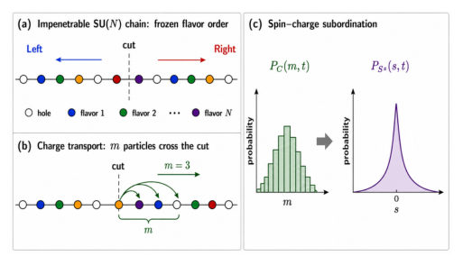
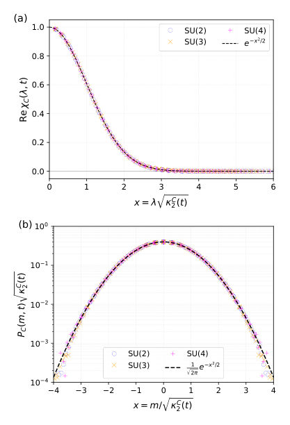
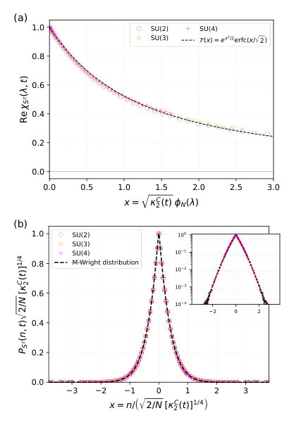
Summary. This theoretical work calculates the exact transport statistics for charge and flavor in the 1D SU(N) Hubbard model. It reveals that charge transport is standard (Gaussian, linear variance), but the flavor transport is anomalously slow, scaling as $t^{1/2}$ due to a kinematic subordination mechanism. This establishes a general principle for slow internal-state dynamics in quantum gases.
Why it may be interesting. The concept of spin-charge subordination provides a powerful, universal mechanism explaining anomalous transport dynamics in strongly correlated quantum systems, which is highly relevant for understanding transport in quantum materials.
Main problem. The paper determines the exact full counting statistics (FCS) for charge and flavor transport in the one-dimensional infinite-U SU(N) Hubbard model, focusing on the mechanism of spin–charge subordination.
Main result. It establishes an exact subordination relation where charge transport is ballistic ($\kappa_C^2 \propto t$), while flavor transport exhibits anomalous, slower scaling ($\kappa_{Sz}^2 \propto t^{1/2}$) governed by a universal non-Gaussian M-Wright law.
Method. The analysis uses generating functions and exploits the exact conservation of flavor ordering, mapping the spin FCS onto the charge FCS via a subordination mechanism.
Model / system. The system is the one-dimensional SU(N) Hubbard chain in the infinite-repulsion limit. The Hamiltonian is projected onto a subspace where the 'no-passing constraint' freezes the flavor sequence while charge carriers behave as free spinless fermions.
Key observables. Full Counting Statistics (FCS) for charge and flavor, charge variance ($\kappa_C^2(t)$), and the asymptotic flavor distribution (M-Wright law).
Important parameters / regimes. The interaction strength is set to infinite ($U o \infty$), and the analysis focuses on the long-time limit ($Jt \gg 1$).
Assumptions / limitations. The derivation relies on the assumption of the infinite-temperature, balanced projected ensemble for the charge variance scaling; finite temperature requires alternative formulas.
Figures summary. Figure 2 compares the charge generating function and distribution for various N, showing convergence to Gaussian behavior. Figure 3 shows the spin generating function and distribution, confirming the collapse onto the M-Wright form.
Paper structure. The paper first establishes the physical model and the free-fermion nature of charge transport. It then derives the exact subordination relation between charge and flavor cumulants. Finally, it analyzes the asymptotic scaling of both variances, contrasting the linear charge growth with the sub-linear spin growth.
We obtain the exact full counting statistics of charge and flavor transport in the one-dimensional infinite-$U$ $SU(N)$ Hubbard model. The no-passing constraint freezes the ordered flavor sequence while the particle coordinates evolve as free spinless fermions. Consequently, charge transfer is governed by a free-fermion determinant, whereas flavor transfer is exactly subordinated to the number of particles crossing the observation cut. For an arbitrary traceless Cartan generator this yields an exact relation between the charge and flavor cumulants. The complete asymptotic flavor distribution is a universal non-Gaussian M-Wright law. Together, these results establish spin--charge subordination as a kinematic mechanism for anomalously slow internal-state transport in one-dimensional impenetrable quantum gases.
Authors: P. O. Amadi, P. Pewkhom, N. Sitpathom, R. Endut, N. Ali, S. A. Aljunid, S. Suryadi, P. Kalasuwan
Type: theory · Category: quantum information and computing · PDF: https://arxiv.org/pdf/2609.04368v1
Analysis basis: full PDF text, analyzed in chunks
Topic relevance: 🔥 interference shaping light 4/5 · Full counting statistics 2/5 · analog quantum simulation 2/5 · methods for driven-dissipative 1/5 · quantum measurements 1/5




Summary. This paper provides a comprehensive theoretical analysis of three-photon and hybrid quantum interference in a complex Six-Port Mach-Zehnder Interferometer. By deriving the system's transfer matrix, the authors characterize how the interference visibility and mean photon numbers are precisely controlled by two independent phase modulators. The results confirm the device's utility as a highly programmable platform for quantum state manipulation and sensing.
Why it may be interesting. This work provides a detailed, analytical framework for controlling multi-photon quantum interference using phase control, which is fundamental to quantum optical circuits and quantum state engineering.
Main problem. The paper analyzes the complex quantum interference patterns arising from three-photon and hybrid coherent-Fock states within a sophisticated optical setup.
Main result. The 6p-MZI is established as a programmable platform capable of manipulating tripartite quantum states and performing coherent amplitude sensing via phase-dependent interference visibility.
Method. The analysis involves deriving the system's transfer matrix analytically and calculating output probability distributions for both pure Fock and hybrid coherent-Fock input regimes.
Model / system. The physical system is a Six-Port Mach-Zehnder Interferometer (6p-MZI) constructed from two cascaded tritters, incorporating two independent phase modulators ($\phi_1, \phi_2$).
Key observables. Output probability distributions $P[111]$, $P[\{300\}]$, and $P[\{210\}]$, and the mean photon number $\langle n_k angle$ at each output port.
Important parameters / regimes. The two relative phase modulators $(\phi_1, \phi_2)$ are crucial, as the interference visibility and sensing threshold depend explicitly on their values.
Assumptions / limitations. The analysis relies on the unitary transformation structure derived from the tritter matrix based on the Discrete Fourier Transform (DFT).
Figures summary. Figures illustrate the schematic of the 6p-MZI and show the dependence of mean photon numbers $\langle n_{1,3} angle$ on the independent phase space $(\phi_1, \phi_2)$, revealing bright ridge behavior relative to the threshold.
Paper structure. The paper proceeds by deriving the transfer matrix, analyzing the pure single-photon input regime to confirm generalized Hong-Ou-Mandel effects, and then extending the analysis to the hybrid coherent-Fock input using the density matrix formalism.
We present a unified theoretical analysis of three-photon quantum interference in a Six-Port Mach-Zehnder Interferometer (6p-MZI) constructed from two cascaded tritters, with two independent phase modulators placed between the tritter arms. We analytically derive the transfer matrix of the 6p-MZI and show how they organize into three symmetry classes, governed by the discrete Fourier transform (DFT) structure of the tritter and the conjugate relations. Furthermore, we analyze two input regimes: First, three indistinguishable single photons are injected into the tritter, and the output probability distributions $P_{[111]}$, $P_{[\{300\}]}$, and $P_{[\{210\}]}$ are derived as functions of the two relative phases $(φ_1, φ_2)$. At $φ_2 = 0$, the single-phase limit is recovered, which confirms 100\% visibility of the even-distribution fringe. Second, a hybrid coherent-Fock input $|α\rangle_1|α\rangle_2|1\rangle_3$ is analyzed via the density matrix formalism. The average photon number at each output port exhibits amplitude-dependent phase shifts. Our results establish the 6p-MZI as a programmable platform for tripartite quantum state manipulation and coherent amplitude sensing.
Authors: Mohammed Charafi, Alexandre Z. Leger, Samridhi Gambhir, Deny R. Hamel
Type: experiment · Category: other · PDF: https://arxiv.org/pdf/2609.05379v1
Analysis basis: full PDF text, analyzed in chunks
Topic relevance: 🔥 quantum optics experiment 4/5 · interference shaping light 3/5 · quantum measurements 2/5
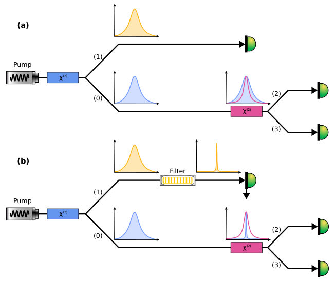
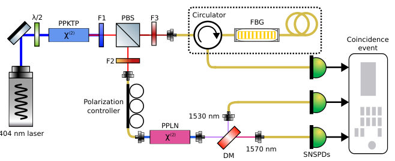

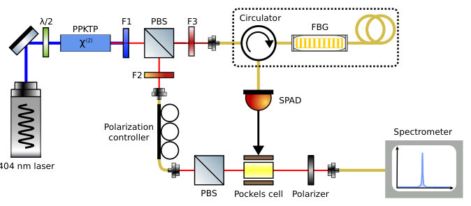
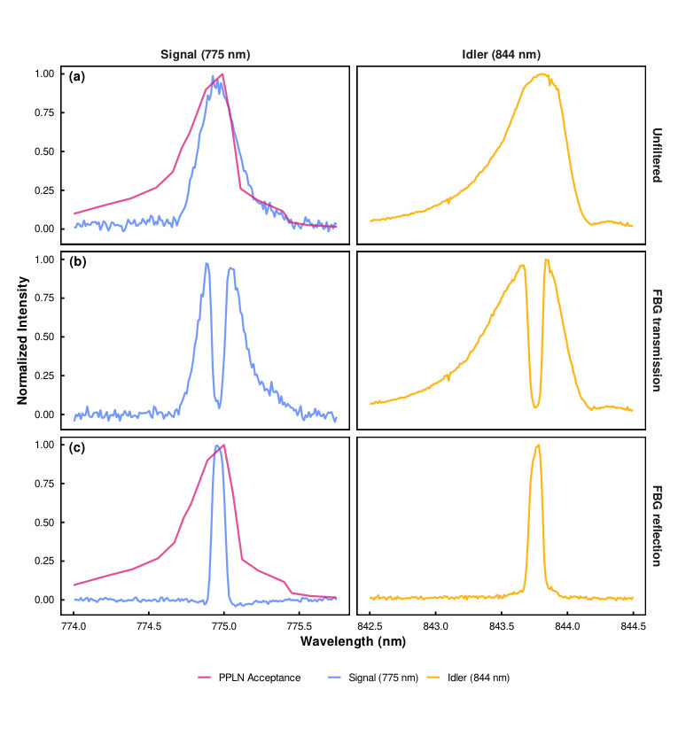
Summary. This paper introduces coincidence-based spectral engineering to overcome spectral mismatch limitations in cascaded spontaneous parametric downconversion. By conditionally filtering the spectrum of one photon in the first stage, the authors can tailor the pump spectrum for the second stage, significantly boosting the efficiency of generating multi-photon entangled states. This technique offers a flexible tool for building high-performance quantum light sources.
Why it may be interesting. This work provides a practical, experimentally validated technique for optimizing complex quantum light sources, which is highly relevant for quantum optics and quantum information applications.
Main problem. Current cascaded spontaneous parametric downconversion (C-SPDC) setups are limited by the requirement for precise spectral matching between successive nonlinear stages, which restricts source choices.
Main result. The authors demonstrated that implementing coincidence-based spectral filtering relaxes this spectral matching constraint, leading to a measurable increase in the photon-triplet generation rate.
Method. They used an electro-optically gated spectrometer to measure the conditional spectra and experimentally verified the enhancement in the second-stage conversion probability per detected herald.
Model / system. The system involves a two-stage C-SPDC process, where the first stage generates photon pairs, and one photon acts as a pump for a second nonlinear interaction. The experiment uses specific nonlinear crystals (PPKTP, PPLN) and SNSPDs.
Key observables. Photon-triplet rate, conditional spectra, and the enhancement factor in the second-stage conversion probability.
Important parameters / regimes. The spectral acceptance bandwidth of the secondary nonlinear process, and the fixed heralding rate.
Assumptions / limitations. The primary assumption is that filtering the herald photon conditionally tailors the spectrum of its partner photon, allowing for efficient coupling between broadband and narrowband stages.
Figures summary. Figure 1 illustrates the concept of C-SPDC with and without spectral filtering. Figure 2 shows the experimental setup used to quantify the effect of filtering on photon triplets.
Paper structure. The paper first establishes the spectral matching problem in C-SPDC. It then introduces coincidence-based spectral filtering as a solution, detailing the measurement of conditional spectra. Finally, it presents quantitative measurements showing the improved triplet rates and compares them to theoretical predictions.
Three-photon states generated via cascaded spontaneous parametric downconversion provide a direct route to multipartite entanglement. However, current implementations require careful spectral matching between successive nonlinear stages, which constrains the choice of downconversion sources. In this work, we show that coincidence-based spectral filtering relaxes this requirement by conditionally tailoring the spectrum of the pump photon entering the second stage. By filtering the herald photon, we conditionally tailor the spectrum of its partner to match the acceptance bandwidth of the secondary nonlinear process, enabling efficient coupling between broadband and narrowband stages without altering the sources themselves. Using an electro-optically gated spectrometer, we directly measure the conditional spectra that govern the cascaded process, allowing us to quantitatively predict the enhancement in second-stage conversion probability per detected herald. We then verify this prediction through photon-triplet measurements, demonstrating improved performance at fixed heralding rates. Our results establish coincidence-based spectral engineering as a practical tool for optimizing cascaded downconversion, particularly in regimes limited by detector saturation or spectral incompatibility.
Authors: Zhiqiang Fan, Haoran He, Ping Lv, Junchao Wang, Yaqiang Sun, Chenhui Wang, Hanshi Zhao, Geyuyan Ma, Haoran Yang, Pengyu Han, Xiangdong Meng, Lixin Wang, Feng Yue, Weilong Wang, Zheng Shan
Type: both · Category: quantum information and computing · PDF: https://arxiv.org/pdf/2609.04674v1
Analysis basis: full PDF text, analyzed in chunks
Topic relevance: 🔥 quantum measurements 4/5 · QC/QI experiment 1/5 · methods for driven-dissipative 1/5
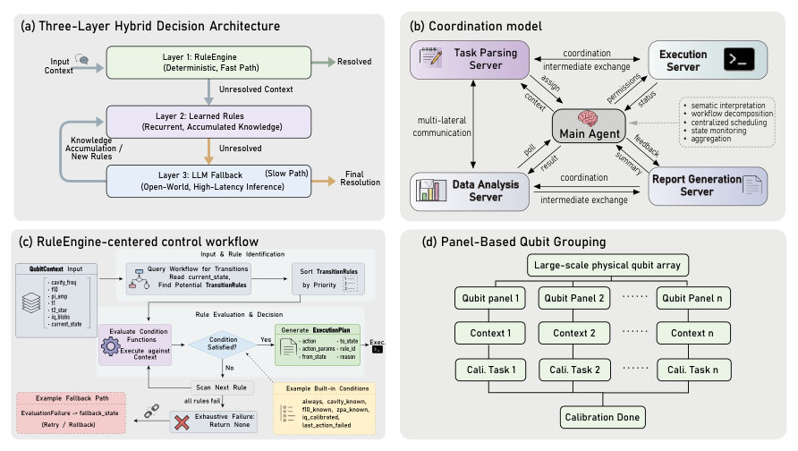
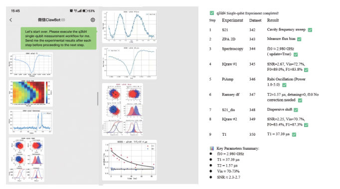
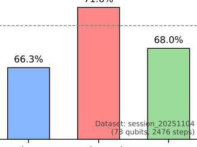
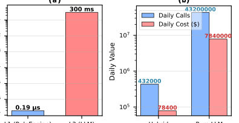
Summary. This paper introduces QMClaw, a general, workflow-oriented framework designed to manage complex quantum measurement and control (QMC) tasks. It solves the latency and determinism issues of pure AI agents by using a RuleEngine as the fast, core control mechanism. This hybrid approach enables scalable, robust, and auditable calibration for large quantum systems.
Why it may be interesting. This work directly addresses the crucial engineering bottleneck of scaling quantum hardware by providing a structured, low-latency control layer that integrates modern AI techniques without sacrificing determinism.
Main problem. Quantum Measurement and Control (QMC) workflows are complex, requiring low latency, robust exception handling, and traceable governance as quantum systems scale.
Main result. The proposed QMClaw framework achieves practical deployment by maintaining a fast, rule-based control path while using LLMs only for high-level interaction and exception support.
Method. It employs a general, workflow-oriented architecture centered on a RuleEngine for deterministic state transitions, hybridizing this with LLM assistance for natural language understanding.
Model / system. The framework is designed for controlling and calibrating quantum processors, such as superconducting qubits, by managing complex measurement and control sequences.
Key observables. Calibration workflows, state transitions, execution plans, resource cost, LLM calling times, and decision latency.
Important parameters / regimes. Scalability to large-scale qubit systems (e.g., million-qubit scenarios); latency and resource overhead.
Assumptions / limitations. The core assumption is that rule-centered architectures are superior to pure LLM control for the time-critical path in QMC.
Figures summary. Figures illustrate the overall six-layer execution stack, the three-layer hybrid decision architecture (RuleEngine, Learned Rules, LLM Fallback), and the centralized scheduling model.
Paper structure. The paper introduces the problem limitations, details the six-layer architecture and the three-layer hybrid decision mechanism, validates it with a single-qubit tune-up workflow, and concludes with performance metrics showing massive cost/latency reductions compared to pure LLM approaches.
As quantum computing continues to scale, quantum measurement and control (QMC) are increasingly constrained by calibration workflow complexity and by requirements for low-latency execution, robust exception handling, and traceable workflow governance. Existing frameworks for QMC are specialized and task-specific, while language-model-based agents for QMC suffer from excessive latency and cannot satisfy the strict timing and control-density demands of large-scale quantum systems. Here we propose QMClaw, a general, workflow-oriented framework for QMC built, featuring a local-first, tool-governed, robust architecture. At its core is a RuleEngine-centered control layer that processes structured context, performs rule-based state transitions, and generates execution plans for typical calibration workflows. Language models are used only for natural-language interaction, high-level task understanding, and exception support, keeping the critical fast path efficient. We implement a single qubit tune-up workflow as a demonstration and validation using real quantum device dataset. We also prove that the framework achieves quantitatively acceptable levels in terms of resource cost, LLM calling times and decision latency, enabling its practical deployment in large-scale quantum qubit measurement and control scenarios. This work presents a general workflow-oriented framework for QMC and provides evidence that rule-centered architectures are a promising design choice for scalable quantum-system calibration.
Authors: Shay J. Manor, Leila S. Erhili, Yassine Jebbouri
Type: both · Category: quantum information and computing · PDF: https://arxiv.org/pdf/2609.04557v1
Analysis basis: full PDF text, analyzed in chunks
Topic relevance: 🔥 QC/QI experiment 4/5 · quantum measurements 1/5
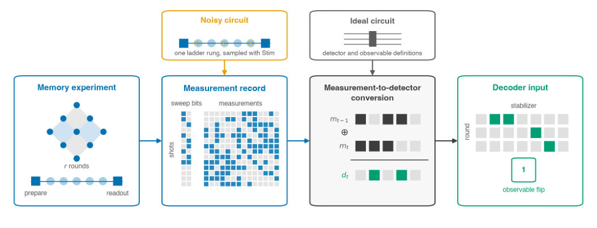

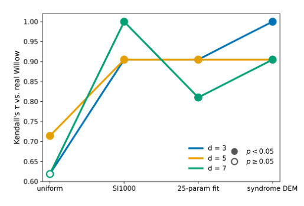
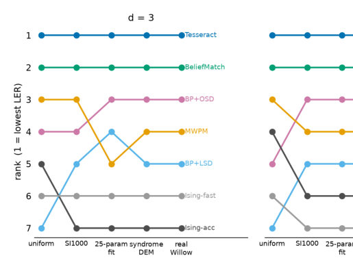
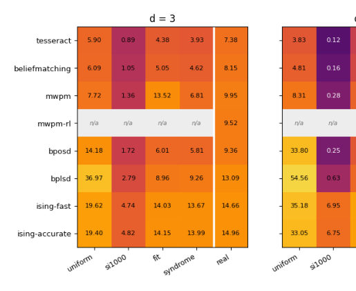
Summary. This work rigorously benchmarks quantum error-correction decoders on a real quantum processor, testing the assumption that synthetic noise models predict hardware performance. The authors find that simple noise model calibration is insufficient; only highly detailed, hardware-informed noise models yield reliable performance rankings. This provides a vital, open pipeline for the quantum community to compare future QEC algorithms.
Why it may be interesting. It provides crucial, hardware-validated benchmarks for QEC decoders, directly challenging the reliance on idealized noise models for assessing quantum computation feasibility.
Main problem. The paper investigates the critical assumption that performance rankings of quantum error-correction (QEC) decoders established using synthetic noise models accurately predict performance on real quantum hardware.
Main result. The authors find that rank agreement between synthetic noise models and real hardware only emerges when the noise model accurately captures per-operation error rates, and they demonstrate that the Ising pre-decoder does not offer an inherent accuracy-latency advantage on the tested hardware.
Method. They benchmarked six decoders across a four-rung ladder of noise models, comparing results derived from synthetic circuits against real measurements from the Willow processor.
Model / system. The study uses the surface code implemented on the Willow processor, which is noted as operating below the surface-code threshold. Benchmarking involves processing raw measurement records to determine observable flips and logical error rates.
Key observables. Logical error rate (LER), rank agreement (quantified by Kendall's $\tau$), per-cycle error rate, and decode latency.
Important parameters / regimes. Code distances ($d=3, 5, 7$), number of rounds ($r$), and the fidelity level of the noise model.
Assumptions / limitations. The core assumption tested is the transferability of synthetic circuit-level noise rankings to real hardware, which the paper argues fails unless the noise model is highly detailed.
Figures summary. Figures summarize per-cycle LER vs. round count across different code distances, and tables compare LERs and rank agreements across various decoders and noise models.
Paper structure. The paper systematically compares decoder performance across multiple noise models (from simple depolarizing to complex detector error models) using a hardware-grounded benchmark, culminating in a detailed comparison of decoder performance metrics.
Quantum error-correction decoders are typically benchmarked against synthetic circuit-level noise, under the assumption that a decoder's ranking under such noise transfers to hardware and improves as the noise model becomes more realistic. The Willow processor, the first to operate below the surface-code threshold, allows us to test this assumption. We rank a panel of six decoders using a four-rung ladder of noise models with increasing fidelity, evaluated against real data across three code distances, two bases, and fifteen round counts. Rank agreement with hardware appears once the noise model gives each operation type its own error rate. Calibrating the model to the device improves absolute error rates but not rank agreement. We additionally provide the first independent evaluation of NVIDIA's Ising pre-decoder on hardware, at code distances below its training receptive field and via a mapping onto the lattice on which it was trained. Under these conditions, it holds no accuracy-latency advantage: another panel decoder matches or improves on it in both per-cycle error rate and decode latency in 278 of the 280 evaluations. We release the full pipeline and the per-shot outcome of every evaluation, so future decoders and devices can be compared.
Authors: Shogo Hanashiro, Holger F. Hofmann
Type: theory · Category: other · PDF: https://arxiv.org/pdf/2609.04812v1
Analysis basis: full PDF text, analyzed in chunks
Topic relevance: 🔥 quantum measurements 4/5 · Full counting statistics 1/5
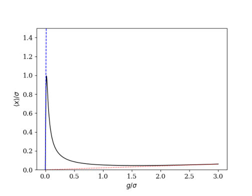
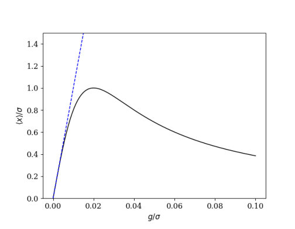
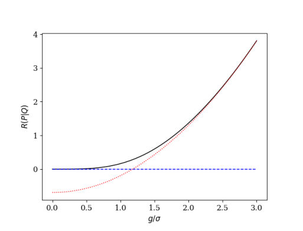
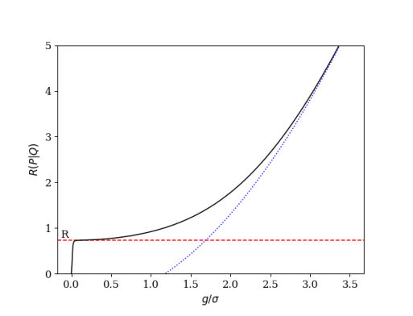
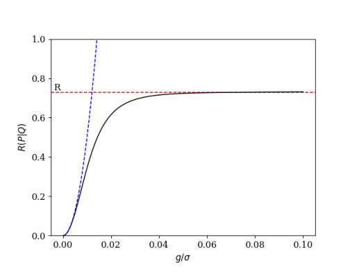
Summary. This paper theoretically examines how post-selection alters measurement statistics as the measurement strength transitions between weak and strong limits. It finds that in an intermediate regime, the system performs a momentum measurement on the meter, suggesting a fundamental role reversal in the measurement process. This sheds light on the physical interpretation of measurement outcomes beyond simple weak-value approximations.
Why it may be interesting. This work provides a detailed theoretical understanding of measurement back-action and how post-selection modifies the expected measurement outcomes, which is crucial for understanding open quantum systems dynamics.
Main problem. The paper investigates the measurement process, specifically analyzing the transition between weak and strong measurement regimes when post-selection is applied.
Main result. In the intermediate measurement regime, the meter statistics are nearly independent of measurement strength and indicate that the system effectively measures the momentum of the meter.
Method. The analysis involves deriving and comparing meter statistics, post-selected meter states, and the dependence of these quantities on the measurement strength parameter ($g$) across different limits.
Model / system. The model describes a quantum system interacting with a meter via a unitary transformation $\hat{U} = e^{-ig \hat{A}\hat{p}}$, where $g$ is the measurement strength and $\hat{p}$ is the meter momentum operator.
Key observables. Meter statistics (average position $\langle\hat{x}\rangle$, distribution $P_{ps}(x)$), weak values, and the post-selection probability $P_f(g)$.
Important parameters / regimes. Measurement strength ($g$), initial meter uncertainty ($\sigma$), and the anomalous weak value ($w$).
Assumptions / limitations. The analysis relies on comparing the behavior in the weak, intermediate, and strong measurement limits, treating the post-selection as the key modifying factor.
Figures summary. Figures illustrate the dependence of the average meter position $\langle\hat{x}\rangle$ on measurement strength, showing distinct behaviors in the weak and strong limits, and the transition region.
Paper structure. The paper reviews post-selected measurements, derives expressions for meter distributions, uses relative entropy analysis, discusses the physics of the intermediate regime, and concludes by explaining the role reversal in the transition.
In the weak measurement regime, post-selection can result in the observation of anomalous weak values, seemingly contradicting the eigenvalue statistics observed when the measurement interaction is strong. Here, we investigate the dependence of meter statistics on measurement strength in a post-selected measurement. We find that the meter statistics in the intermediate regime between weak and strong measurements is nearly independent of measurement strength and show that, in this regime, the system performs a measurement of momentum on the meter. The transition between weak and strong measurements is explained by a reversal of the roles of the system and the meter, where the post-selection acts as a readout of information about the meter.
Authors: Martin Weitz, Andreas Redmann, Riccardo Panico, Leon Kleeblank, Kevin J. H. Peters, Frank Vewinger, Julian Schmitt
Type: theory · Category: quantum gases · PDF: https://arxiv.org/pdf/2609.05287v1
Analysis basis: full PDF text, analyzed in chunks
Topic relevance: Keldysh / 2PI / non-Gaussian methods 3/5 · analog quantum simulation 3/5 · driven-dissipative phase transition 3/5 · Tavis-Cummings & cavity-many-emitter 2/5 · correlated / nonlocal dissipation 2/5 · methods for driven-dissipative 2/5 · non-equilibrium universality 2/5 · Dicke superradiance 1/5 · Full counting statistics 1/5 · quantum measurements 1/5 · superradiant laser 1/5
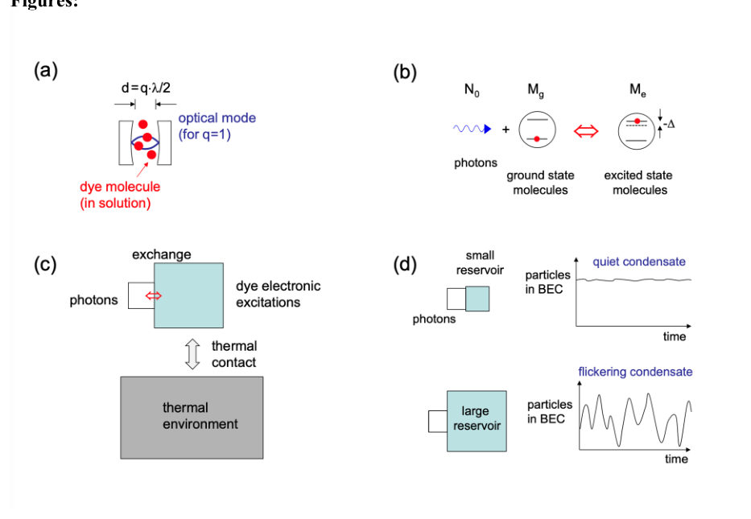
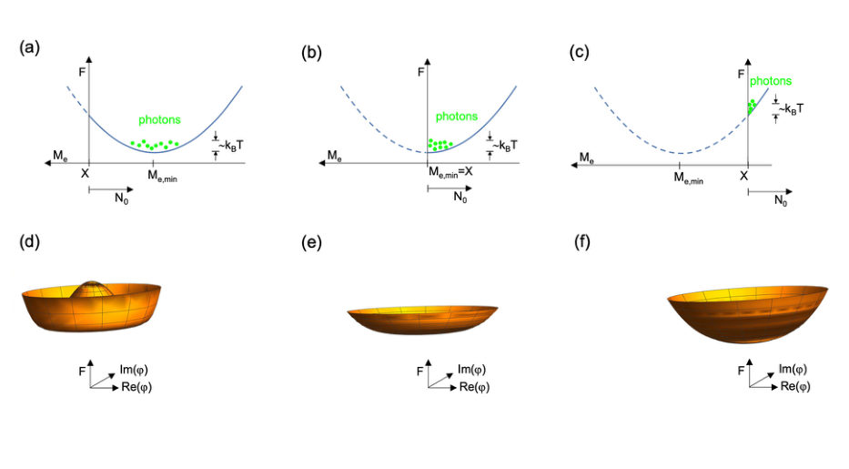
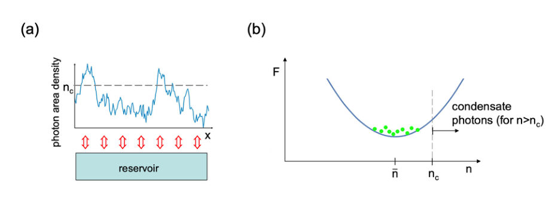
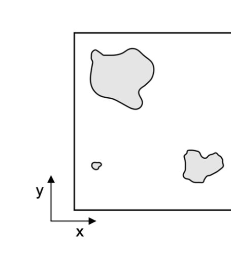
Summary. This paper models photon Bose-Einstein Condensation in a microcavity coupled to a material reservoir, using a free-energy approach. It demonstrates a fundamental transition in the system's statistics, moving from a canonical regime exhibiting spontaneous symmetry breaking to a grand canonical regime where condensation occurs without such breaking. This has implications for understanding coherence in various optical systems.
Why it may be interesting. This work bridges concepts from Bose-Einstein condensation (quantum gases) with open quantum systems dynamics, using free energy methods to predict the transition between different statistical descriptions of coherence in cavity QED systems.
Main problem. The paper develops a theory model to study the fluctuation properties and coherence of photons in an optical microcavity coupled to a material reservoir.
Main result. The system's free energy landscape transitions from a Mexican-hat shape (canonical regime, suggesting spontaneous symmetry breaking) to a bowl-shaped form (grand canonical regime, suggesting BEC without SSB).
Method. The analysis uses a free-energy description, treating the system in both canonical and grand canonical ensembles to analyze the statistical fluctuations of the condensate.
Model / system. The system consists of noninteracting photons confined in a microcavity, coupled to a reservoir of material electronic excitations (e.g., dye molecules). The model is analyzed by varying the relative size of this reservoir.
Key observables. Condensate number fluctuations, free energy landscape shape, second-order coherence function g^(2)(0), and the order parameter $\langle N_0 \rangle$.
Important parameters / regimes. Reservoir size (determining the statistical regime), critical temperature $T_c$, and the coherence length $\xi$.
Assumptions / limitations. The model assumes the lossless limit and that the system can be described by interpolating between canonical and grand canonical ensembles.
Figures summary. Figures illustrate the free energy variation across different statistical regimes (canonical vs. grand canonical) and show spatial profiles indicating the onset of long-range coherence in localized 'microcondensates'.
Paper structure. The paper first establishes the single-mode free energy model, contrasting the canonical (Mexican-hat) and grand canonical (bowl-shaped) regimes. It then extends the analysis to include spatially distributed coupling, predicting localized coherence islands.
Photons are mutually nearly noninteracting particles, so thermalized photon ensembles are commonly obtained not from direct particle-particle-interactions but rather from contact with matter, which can constitute a reservoir for the photon gas. We develop a theory model for photons in a material-filled (e.g. liquid dye) optical microcavity, with the aim to study the fluctuation properties using a free-energy description for noninteracting photons coupled to a reservoir of material electronic excitations. To begin with, we use a single mode description for the condensate. For a small relative size of the material reservoir, corresponding to the canonical regime, condensate number fluctuations are small, and the derived free energy landscape takes the usual Mexican-hat shaped form such that spontaneous symmetry breaking occurs. In contrast, for a large relative size of the reservoir, corresponding to the grand canonical regime, fluctuations become as large as the average particle number. We show that the resulting free energy landscape acquires a bowl-shaped form, with a single minimum at the origin. Thus, a macroscopic occupation of the ground state (i.e., Bose-Einstein condensation) in the absence of spontaneous symmetry breaking is expected. We also provide a model for the treatment of a photon gas trapped in a box-shaped potential with spatially distributed coupling to a reservoir. The model predicts, for example, a statistically fluctuating pattern of islands with long-range coherence, resembling transient microcondensates.
Authors: Soham Pal, Karen Hovhannisyan, Omri Porat, Shovan Dutta, Janet Anders, Helena Knowles
Type: both · Category: statistical mechanics · PDF: https://arxiv.org/pdf/2609.04905v1
Analysis basis: full PDF text, analyzed in chunks
Topic relevance: QC/QI experiment 3/5 · driven-dissipative phase transition 3/5 · methods for driven-dissipative 3/5 · non-equilibrium universality 3/5 · scars & prethermalization 3/5 · quantum measurements 2/5 · Keldysh / 2PI / non-Gaussian methods 1/5 · analog quantum simulation 1/5 · correlated / nonlocal dissipation 1/5
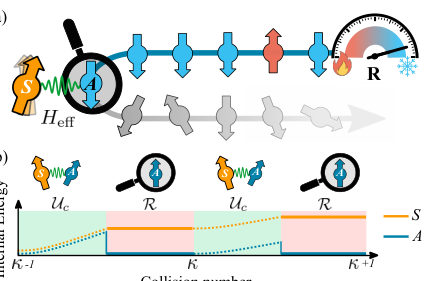
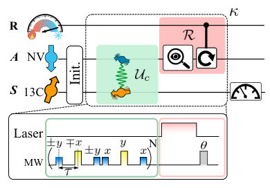
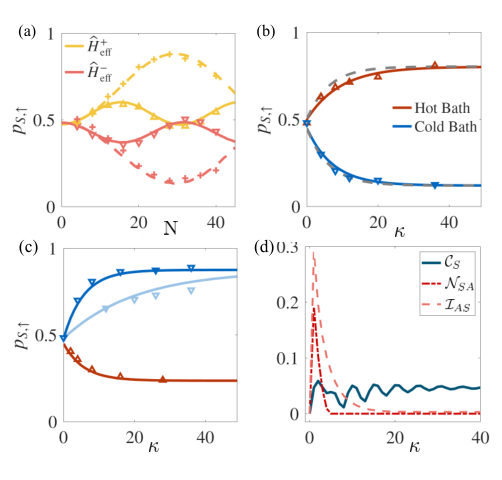
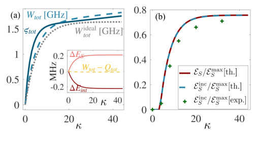
Summary. This research details the use of an ancilla qubit (NV center) coupled to a target spin ($^{13} ext{C}$) to engineer quantum thermodynamic processes. By implementing controlled unitary and dissipative strokes, the authors demonstrate the ability to achieve anti-thermalization and utilize the system as a quantum battery. This offers a powerful platform for studying non-equilibrium physics in solid-state quantum devices.
Why it may be interesting. This work provides a concrete, solid-state realization of fundamental concepts in non-equilibrium statistical mechanics, particularly concerning work extraction and thermalization control in open quantum systems.
Main problem. The paper addresses the challenge of engineering quantum thermodynamic processes and generating inaccessible steady states by precisely controlling the coupling between a quantum system and its reservoir.
Main result. They experimentally demonstrate anti-thermalization, stabilizing the target system at a negative temperature, and utilize this steady state to operate the system as a quantum battery achieving high ergotropy.
Method. The dynamics are modeled using a collision framework involving alternating engineered unitary interactions and dissipative ancilla resets, allowing for cycle-by-cycle tracking of thermodynamic quantities.
Model / system. The platform uses a solid-state system: an NV center electron spin acts as the ancilla, coupled to a proximal $^{13} ext{C}$ nuclear spin target. The dynamics are controlled via shaped microwave and optical pulses.
Key observables. Work, heat, coherence, entropy production, ergotropy, and the steady-state temperature of the target system.
Important parameters / regimes. The ability to tune the reservoir temperature ($T_R$) and the coupling strength via pulse sequences.
Assumptions / limitations. The theoretical framework relies on the collision model structure, and the analysis of entropy production assumes the reservoir is an ideal bath.
Figures summary. Figures illustrate the schematic interaction sequence (unitary and reset strokes), the solid-state circuit diagram, and comparisons of simulated vs. experimental system energetics, coherence, and correlations.
Paper structure. The paper builds a theoretical framework based on a collision model, details the experimental implementation using NV/C spins, and then demonstrates key thermodynamic phenomena like anti-thermalization and quantum battery operation.
Engineering the properties of a reservoir and its coupling to a quantum system is a powerful tool for simulating quantum thermodynamic processes and for generating otherwise inaccessible steady states. Yet tailoring both the reservoir and its coupling within a single platform remains challenging. Here we introduce a platform, in which an ancilla qubit mediates the coupling of a target system to a reservoir, providing independent control over the interaction form, coupling strength, and effective reservoir temperature. Our implementation uses the electron spin of a single nitrogen-vacancy center in diamond as the ancilla and a proximal $^{13}$C nuclear spin as the target. By alternating engineered unitary interactions with dissipative ancilla resets, we realize dynamics naturally described by a collision model, enabling straight-forward tracking of the work, heat, coherence, and entropy generated at every collision. We experimentally demonstrate conventional thermalization and also realize anti-thermalization: the stabilization of the target system in a temperature opposite to that of its reservoir. Finally, harnessing this steady-state engineering, we utilize the nuclear spin as a quantum battery, achieving a steady-state ergotropy exceeding $70\%$ of the theoretical maximum.
Authors: Soumya Kanti Pal, Shamik Gupta
Type: theory · Category: statistical mechanics · PDF: https://arxiv.org/pdf/2609.05391v1
Analysis basis: full PDF text, analyzed in chunks
Topic relevance: correlated / nonlocal dissipation 3/5 · driven-dissipative phase transition 3/5 · methods for driven-dissipative 3/5 · non-equilibrium universality 3/5 · Keldysh / 2PI / non-Gaussian methods 2/5 · analog quantum simulation 2/5 · Frenkel-Kontorova 1/5 · quantum measurements 1/5 · scars & prethermalization 1/5
Summary. This work analyzes non-reciprocal stochastic systems using NROU models, linking them to the physics of Exceptional Points. It demonstrates how these non-Hermitian features lead to anomalous relaxation, unique steady-state behaviors like pseudo-equilibrium, and a controllable boundary refrigeration effect by tuning the system's asymmetry.
Why it may be interesting. It provides a concrete, solvable model connecting non-Hermitian physics (EPs) directly to measurable, non-equilibrium thermodynamic quantities like heat flow and energy dissipation, which is highly relevant for open quantum systems.
Main problem. The paper investigates the non-equilibrium dynamics and steady-state properties of systems subjected to non-reciprocal interactions, which inherently drive them away from equilibrium.
Main result. The study reveals anomalous relaxation at exceptional points (EPs), the existence of 'pseudo-equilibrium' states with non-zero currents, and a boundary refrigeration effect controllable by tuning the non-reciprocity parameter.
Method. The analysis employs stochastic processes (Ornstein-Uhlenbeck models), connecting non-Hermitian spectral theory (Exceptional Points) to non-equilibrium thermodynamics via the Harada-Sasa relation and contour integration.
Model / system. The core model is a hierarchy of non-reciprocally interacting Ornstein-Uhlenbeck (NROU) processes, ranging from simple dimers to many-body chains mapping onto the Hatano-Nelson model.
Key observables. Autocorrelation/covariance functions, total steady-state heat dissipation ($\langle Q_{tot} angle$), and the sign of boundary heat flux.
Important parameters / regimes. The non-reciprocity parameter $g$, and the special point $g=g^*$ where the system exhibits Exceptional Points (EPs).
Assumptions / limitations. The analysis relies on the mathematical framework of non-Hermitian systems and assumes the validity of fluctuation-dissipation theorems and their extensions to non-equilibrium steady states.
Figures summary. Figures illustrate the schematic coupling of non-reciprocal interactions and likely show the dependence of observables on the non-reciprocity parameter $g$.
Paper structure. The paper systematically introduces the NROU models, analyzes the mathematical consequences of reaching an EP ($g=g^*$), derives anomalous relaxation scaling, and finally calculates thermodynamic quantities like heat dissipation and boundary effects using advanced mathematical techniques.
Non-reciprocal interactions are ubiquitous in active, biological, and disordered systems, generically driving them out of equilibrium. Here, we introduce a hierarchy of non-reciprocally interacting Ornstein-Uhlenbeck (NROU) models governed by a tunable non-reciprocity parameter $g$. At a special point $g=g^*$, the drift matrix becomes non-diagonalizable, realizing exceptional points (EP's) of different orders, where eigenvalues and eigenvectors simultaneously coalesce. The hierarchy encompasses non-reciprocally coupled dimers, their disordered counterparts, and a many-body chain exactly mapping onto the paradigmatic Hatano-Nelson model in the arena of non-Hermitian quantum systems. For the disordered model, we show that the distribution of the EP location $g^*$ across disorder realizations develops a universal edge singularity precisely at the clean-system EP, and is manifestly non-self-averaging. Across all models, we find that at the EP, the usual exponential relaxation of the autocorrelation and covariance functions is dressed by a polynomial-in-time prefactor whose degree is set by the order of the EP and whose detailed structure encodes the spatial architecture of the chain. At complete asymmetry, the many-body chain exhibits ``pseudo-equilibrium'': its steady-state distribution factorizes into equilibrium-like single-particle measures despite a nonzero steady-state current. Moreover, the $N$-particle interacting system decomposes into $N/2$ independent complex OU processes. Finally, using the Harada-Sasa relation, we obtain a closed-form expression for the total steady-state heat dissipation and uncover a boundary refrigeration effect, in which the boundary particles switch from acting as a hot to a cold reservoir as the non-reciprocity is tuned.
Authors: Deependra Singh, Debarupa Saha, Ujjwal Sen
Type: theory · Category: statistical mechanics · PDF: https://arxiv.org/pdf/2609.04457v1
Analysis basis: full PDF text, analyzed in chunks
Topic relevance: correlated / nonlocal dissipation 3/5 · driven-dissipative phase transition 3/5 · methods for driven-dissipative 3/5 · Keldysh / 2PI / non-Gaussian methods 2/5 · non-equilibrium universality 2/5 · scars & prethermalization 2/5 · quantum measurements 1/5

Summary. This paper investigates the fundamental conditions required for a quantum system to gain ergotropy—the extractable work—from its environment. It shows that strict thermal assumptions limit this gain, but relaxing these assumptions, particularly by allowing environmental athermality or increasing environmental dimensionality, enables positive ergotropic injection. This refines our understanding of quantum work extraction in realistic, interacting open systems.
Why it may be interesting. This work directly addresses the thermodynamics of open quantum systems, specifically quantifying the resource (environmental state/interaction) needed to violate standard thermodynamic bounds on work extraction.
Main problem. The research aims to determine the minimal physical conditions, such as environmental dimensionality or interaction type, required for injecting ergotropy into an open quantum system.
Main result. Ergotropy injection is impossible under standard thermal operations for qubits but becomes possible by relaxing environmental thermality or increasing the environment's dimensionality (e.g., to a qutrit).
Method. The authors employ theoretical analysis by comparing results under Thermal Operations (TO) versus generalized Energy-Conserving Operations (ECO) using specific Hamiltonian models.
Model / system. The study models an open quantum system (S) interacting with an environment (E), initially focusing on qubit-qubit interactions using an isotropic XY Hamiltonian. The analysis distinguishes between different operational constraints (TO vs. ECO).
Key observables. Ergotropy (quantifying extractable work), Ergotropic Gain ($\Delta R$), and the coherence/thermal state of the environment.
Important parameters / regimes. Environmental dimensionality (qubit vs. qutrit), interaction strength, and the initial thermal state of the environment (thermal vs. athermal/population inversion).
Assumptions / limitations. The analysis relies on comparing the constraints of thermal operations versus the broader scope of energy-conserving unitaries.
Figures summary. Figure 1 conceptually illustrates the difference between TO (no gain) and ECO (potential for ergotropic injection) based on environmental resources.
Paper structure. The paper progresses by first establishing the limitations under thermal operations, then advancing the analysis by relaxing these constraints to allow for environmental athermality and interactions, finally analyzing specific degeneracy regimes (CB and DD) to pinpoint the necessary conditions.
Interactions between a quantum system and its environment can inject ergotropy into the system, raising the question of the minimal dimensionality and physical resources required for such injection. We first show that ergotropy injection is impossible under thermal operations when both the system and environment are qubits, whereas it becomes possible when the environment is enlarged to a qutrit. We further show that already in the qubit-qubit setting, relaxing environmental thermality and allowing interactions between system and environment allows ergotropy increment under energy-conserving unitaries. To elucidate the role of interactions, we consider a two-qubit isotropic XY interaction Hamiltonian and identify its distinct degeneracy regimes. We show that, in the central-block regime, when both the initial system and environmental states are incoherent, no ergotropic gain is possible when the environment is initially thermal, irrespective of the interaction strength. In contrast, environmental athermality in the form of population inversion, while retaining incoherence, enables ergotropic injection. We derive the optimal ergotropic gain and show that environmental coherence can enhance it, while system coherence alone need not be beneficial and can even reduce the gain. We further consider the double-degenerate regime, characterized by a finite interaction strength, and demonstrate positive ergotropic gain even for a thermal environment.
Authors: Gerhard Jung
Type: theory · Category: statistical mechanics · PDF: https://arxiv.org/pdf/2609.05217v1
Analysis basis: full PDF text, analyzed in chunks
Topic relevance: Keldysh / 2PI / non-Gaussian methods 3/5 · driven-dissipative phase transition 3/5 · methods for driven-dissipative 3/5 · non-equilibrium universality 3/5 · correlated / nonlocal dissipation 2/5 · quantum measurements 1/5

Summary. This work generalizes the Mori-Zwanzig projection formalism by introducing an oblique projector to accurately model systems far from equilibrium, such as active matter. The resulting oblique Generalized Langevin Equation correctly captures non-equilibrium effects, such as odd transport and chiral dynamics, which the standard formalism fails to predict. It provides a powerful theoretical tool for analyzing complex, non-equilibrium many-body dynamics.
Why it may be interesting. The development of a mathematically rigorous projection technique (oblique projector) to handle non-equilibrium dynamics is crucial for modeling complex systems like active matter, which often fall outside the scope of standard equilibrium statistical mechanics.
Main problem. The paper addresses the challenge of correctly coarse-graining the dynamics of complex physical systems that operate far from thermodynamic equilibrium, where standard projection operator methods fail.
Main result. The introduction of an oblique projector successfully derives a generalized Langevin equation (GLE) that correctly captures non-equilibrium physics, unlike the standard Mori projector.
Method. The core method involves generalizing the Mori-Zwanzig formalism by employing an oblique projector based on biorthogonal variables, leading to a non-equilibrium fluctuation-dissipation relation.
Model / system. The formalism is applied to model active or living matter, specifically analyzing the emergent chiral dynamics of a passive tracer immersed in a chiral active bath.
Key observables. Generalized Langevin Equation (GLE), non-equilibrium fluctuation-dissipation relations (FDRs), mean angular drift, and odd transport properties (Hall angle).
Important parameters / regimes. Chiral frequency ($\omega$), friction ($\gamma$), and the correlation time scales of the bath interactions.
Assumptions / limitations. The derivation relies on the assumption that the oblique projector correctly decomposes emergent interactions into systematic and stochastic parts, and that the resulting GLE can be accurately reconstructed from response functions.
Figures summary. Figures compare correlation functions and FDRs derived from the oblique GLE versus the standard Mori GLE, showing discrepancies in non-equilibrium regimes. Other figures illustrate the predicted odd transport and the shift in the chiral frequency.
Paper structure. The paper first introduces the failure of the standard Mori projector for non-equilibrium systems. It then develops the oblique projector formalism, deriving the oblique GLE. Finally, it applies this formalism to the active bath model, deriving quantitative predictions for chiral dynamics and odd transport.
We generalize the Mori-Zwanzig projection operator formalism by introducing an oblique projector using biorthogonal variables to coarse-grain the dynamics of systems far from equilibrium, such as active or living matter. Improving on previously used orthogonal projectors, the oblique projector correctly decomposes the emergent interactions of the coarse-grained particles into systematic and stochastic contributions. We show that the formalism directly connects to established results in non-equilibrium linear response theory and adiabatic perturbation theory. Based on this formalism, we develop a coarse-graining algorithm which we apply to extract the emergent non-equilibrium chiral dynamics of a passive tracer in a chiral active bath. Our theory correctly predicts the odd transport properties and a confinement-induced shift of the chiral frequency of the tracer.
Authors: Juste Deuyekbe, Philippe Djorwé, A. -H. Abdel-Aty, A. Elrashidi, Nsangou Mama, Serge Guy Nana Engo
Type: theory · Category: other · PDF: https://arxiv.org/pdf/2609.04492v1
Analysis basis: full PDF text, analyzed in chunks
Topic relevance: driven-dissipative phase transition 3/5 · methods for driven-dissipative 3/5 · analog quantum simulation 2/5 · correlated / nonlocal dissipation 2/5 · non-equilibrium universality 2/5 · quantum measurements 2/5 · Keldysh / 2PI / non-Gaussian methods 1/5
Summary. The authors propose a double-chain optomechanical ladder to overcome the inherent precision limitations of single-port non-Hermitian sensors. By using optimal control, they demonstrate that the architecture allows for two distinct operating regimes: one maximizing measurement precision and another providing high directional gain. This work shows a pathway to realizing advanced quantum sensors for applications like force sensing and axion searches.
Why it may be interesting. This work directly tackles open quantum systems and quantum sensing limits by engineering non-Hermitian structures to surpass fundamental metrological bounds, which is highly relevant to quantum optics and AMO.
Main problem. The paper addresses the fundamental resource bound on metrological precision (set by the Petermann factor) in single-port non-Hermitian sensors.
Main result. A double-chain optomechanical ladder geometry evades this bound by spatially separating signal amplification from quantum-noise drainage, enabling high-precision sensing while maintaining directional gain.
Method. Gradient-based differentiable optimal control (DOC) is used to maximize the resource-normalized Fisher information subject to a strict Hurwitz-stability constraint.
Model / system. The system is a double-chain optomechanical ladder, modeled using non-Hermitian drift matrices, which exhibits the non-Hermitian skin effect (NHSE).
Key observables. Resource-normalized Fisher information (Fnorm), Directional Gain (Gfwd), and Isolation (Iso).
Important parameters / regimes. System size N (6 to 16), disorder strength (5% $\sigma_{RMS}$), and the stability constraint (Hurwitz stability).
Assumptions / limitations. The advantage relies on the architectural separation of signal and noise pathways, and the analysis assumes the system can be mapped to circuit-QED parameters.
Figures summary. Figures illustrate the comparison between single-chain (resource-bound) and double-chain (enhanced) performance regarding Fnorm vs. size N, and show the distinct deep-stability and marginal-stability operating regimes.
Paper structure. The paper first establishes the problem with single-port sensors, then introduces the double-chain ladder and uses DOC to find optimal parameters. It characterizes two distinct solution classes (deep vs. marginal stability) that define a precision-gain frontier, and finally tests the robustness of these solutions against disorder.
In single-port non-Hermitian sensors the Petermann factor offsets susceptibility gains, imposing a strict resource bound on metrological precision. We test whether a multi-port geometry can evade this bound: a double-chain optomechanical ladder with opposing non-reciprocal hoppings spatially separates signal amplification from quantum-noise drainage, and gradient-based differentiable optimal control (DOC) maximizes the resource-normalized Fisher information $\Fnorm$ subject to a Hurwitz-stability constraint. Across system sizes $N\in\{\num{6},\dots,\num{16}\}$ the optimizer returns $\Fnorm>0$ in every case, with two coexisting solution classes whose selection is initialization-dependent: deep-stability configurations achieve $\Fnorm\in\numrange{0.937}{0.987}$ with attenuated transmission, while marginal-stability configurations deliver directional gain $\Gfwd\in\qtyrange{13.5}{15.5}{\dB}$ with isolation $\Iso\in\qtyrange{40}{64}{\dB}$. A multi-restart ensemble reveals these classes are the endpoints of a precision--gain frontier. All solutions remain Hurwitz-stable under \qty{5}{\percent} disorder (\qty{87.5}{\percent} recovery), and the deep-stability advantage survives realistic preamplifier noise at $\Fnormeff\approx\num{0.3}$--$\num{0.5}$. Mapped onto circuit-QED parameters, the architecture enables sub-attonewton force sensing and broadband axion searches across the \qtyrange{1}{10}{\giga\hertz} band.
Authors: Onyango Stephen Okeyo
Type: theory · Category: other · PDF: https://arxiv.org/pdf/2609.04580v1
Analysis basis: full PDF text, analyzed in chunks
Topic relevance: Tavis-Cummings & cavity-many-emitter 3/5 · analog quantum simulation 3/5 · Dicke superradiance 2/5 · correlated / nonlocal dissipation 2/5 · driven-dissipative phase transition 1/5 · methods for driven-dissipative 1/5 · quantum optics experiment 1/5

Summary. This paper analyzes the anti-Jaynes-Cummings model coupled to a squeezed vacuum, focusing on residual detuning effects. The authors test methods like Kerr shifts and collective coupling to restore ideal quantum contrast. They find that collective coupling is highly effective, suggesting that ultrastrong circuit QED is the most promising physical platform for realizing such controlled quantum interactions.
Why it may be interesting. This work tackles the subtle, non-trivial effects of residual detuning in cavity QED systems, providing concrete numerical evidence on how collective coupling can overcome fundamental limitations in achieving perfect quantum control.
Main problem. The paper investigates the residual detuning present in the laboratory-frame anti-Jaynes-Cummings (AJC) model when coupled to a squeezed vacuum.
Main result. Neither a single Kerr shift nor an incoherent sum approximation can fully restore unit contrast; however, collective Dicke coupling significantly enhances the contrast, suggesting ultrastrong circuit QED is the relevant platform.
Method. The analysis relies on full truncated diagonalization of the Hamiltonian for non-vacuum states, comparing exact numerical results against simplified analytical approximations.
Model / system. The system is the anti-Jaynes-Cummings (AJC) model coupling a two-level emitter to a bosonic ladder, analyzed in the presence of a squeezed vacuum. The Hamiltonian includes terms for detuning, Kerr shifts, and collective Dicke coupling.
Key observables. The primary observable is the contrast ($C$), defined as the amplitude of the first turning point of the atomic ground-state population.
Important parameters / regimes. Key parameters include the residual detuning ($2f\lambda$), the squeezing parameter ($r=1$), the Kerr strength ($\chi$), and the number of emitters ($N$).
Assumptions / limitations. The analysis assumes the validity of the AJC model framework and requires full diagonalization because the free field term breaks simple conservation laws when the vacuum is squeezed ($r eq 0$).
Figures summary. Figures compare the short-time contrast ($C$) for various detunings and atom numbers, contrasting exact evolution with incoherent averages, and showing time traces of the ground-state population.
Paper structure. The paper first establishes the problem of residual detuning in the laboratory frame. It then tests two remedies—Kerr shifts and Dicke coupling—by calculating the contrast $C$ for the squeezed vacuum ($r=1$), concluding with quantitative comparisons between the exact and approximate results.
The laboratory-frame anti-Jaynes--Cummings (AJC) interaction retains a residual detuning $2fλ$ that is absent from the rotating-frame model. We map two proposed remedies---a Kerr shift $χ(\hat a^\dagger\hat a)^2$ and collective Dicke coupling of $N$ two-level emitters---for a squeezed vacuum on that ladder ($r=1$, $\langle n\rangle=\sinh^2 r\simeq 1.38$). All quoted contrasts are the amplitude of the first turning point of the atomic ground-state population, which coincides with the two-level formula $\mathcal{C}=1/[1+(2f+χ)^2]$ at $r=0$ to $10^{-9}$. Three results follow. (i)~A single Kerr strength never restores unit contrast at $r=1$; the $r=0$ $n$-dependent shift $χ(2n+1)$ cannot cancel $2fλ$ on every occupied Fock component. (ii)~The exact $r=1$ contrast at $χ=0$ is not reproduced by an incoherent sum $\sum_n P_n(r)\,\mathcal{C}_n$ built from the $r=0$ two-level formula; pointwise deviations are several tenths. (iii)~Collective coupling raises the contrast systematically. At $f=5$ one finds $\mathcal{C}=0.140$ ($N=1$) and $\mathcal{C}=0.575$ ($N=8$), above the unsqueezed value $8/[8+(2f)^2]=0.074$. The $N=16$ point at this $f$ remains truncation-limited and is not quoted to three digits. The same $N\sim(2f)^2$ estimate for $\mathcal{C}=1/2$ places trapped-ion values $f\sim 10^{2}$--$10^{3}$ outside the present construction. The relevant platform is ultrastrong circuit QED with $f\sim 1$--$10$. The calculation is a numerical control landscape, not a new solvable limit.
Authors: Carlos H. S. Vieira, Xinfang Nie, Dawei Lu, Fernando Parisio
Type: both · Category: quantum information and computing · PDF: https://arxiv.org/pdf/2609.05248v1
Analysis basis: full PDF text, analyzed in chunks
Topic relevance: QC/QI experiment 3/5 · correlated / nonlocal dissipation 2/5 · driven-dissipative phase transition 2/5 · methods for driven-dissipative 2/5 · Keldysh / 2PI / non-Gaussian methods 1/5 · non-equilibrium universality 1/5 · quantum measurements 1/5
Summary. This paper develops a general theory showing that Quantum-State Texture (QST) dynamics are simply determined by the dual evolution of a single reference state. The authors experimentally validate this theory using NMR to show that QST conservation is a hallmark of free-unital dynamics, allowing local measurements to diagnose the presence of entangling gates.
Why it may be interesting. The connection between QST conservation and the mathematical structure of free-unital dynamics provides a powerful, measurable signature for quantum operations, which is highly relevant for characterizing gate fidelity in quantum computation.
Main problem. The primary challenge is the lack of a general theoretical framework to describe the dynamics of Quantum-State Texture (QST) when subjected to arbitrary open quantum channels.
Main result. The authors establish that QST dynamics are fully encoded in the dual evolution of a single reference state, and they demonstrate that QST conservation provides a practical diagnostic tool to distinguish entangling gates from non-entangling ones.
Method. The theory derives necessary and sufficient conditions for QST preservation using dual maps, which are then experimentally verified by measuring the 'grand sum' ($\Sigma$) on a liquid-state NMR quantum processor.
Model / system. The work uses a four-qubit liquid-state NMR processor. The theoretical models involve characterizing dynamics under various CPTP maps, such as Phase-Damping (PD) and Free Amplitude-Damping (FAD) channels.
Key observables. Quantum-State Texture (QST), measured via the 'grand sum' ($\Sigma$), and the deviation of this sum ($\Delta\Sigma$) from expected values.
Important parameters / regimes. The interpolation parameter $\mu$ controlling the mixture between free-unital and free-non-unital dynamics, and the damping parameter $\lambda$.
Assumptions / limitations. The initial theoretical development assumes a finite dimension $D$ for the system. Experimentally, the use of basis averaging (Proposition 5) is preferred over sampling the entire Haar measure.
Figures summary. Figures compare measured vs. predicted grand sums for PD channels, show $\Sigma$ conservation for Free-Unital (FPD) channels, and illustrate how $\Delta\Sigma$ varies continuously between free-non-unital and free-unital limits.
Paper structure. The paper first establishes the theoretical framework (encoding QST in the dual map) and then proceeds through experimental verification by analyzing specific channels (PD, FPD, FAD) and demonstrating the gate identification protocol using controlled interpolation.
Quantum-state texture (QST) has found applications in several fields from quantum foundations and computation to quantum criticality. However, a general theory of QST dynamics under arbitrary physical processes remains unavailable, limiting both its practical application and experimental exploration. Here, we demonstrate that the QST response to an arbitrary finite-dimensional channel is fully encoded in the dual evolution of a single reference state. This description yields necessary and sufficient conditions for texture preservation and implies exact conservation under all free-unital dynamics. Using a nuclear magnetic resonance quantum processor, we experimentally verify these predictions across distinct channel classes. Furthermore, we show that local QST measurements provide an operational signature of entangling gates in circuit layers. Our results establish quantum-state texture as a resource and a practical diagnostic tool in quantum information processing.
Authors: Xinyuan You, Aniket Maiti, Yao Lu
Type: both · Category: quantum information and computing · PDF: https://arxiv.org/pdf/2609.04704v1
Analysis basis: full PDF text, analyzed in chunks
Topic relevance: QC/QI experiment 3/5 · driven-dissipative phase transition 3/5 · methods for driven-dissipative 3/5 · non-equilibrium universality 2/5 · Keldysh / 2PI / non-Gaussian methods 1/5
Summary. This paper provides a comprehensive theoretical and experimental study of the limits imposed by strong microwave drives on Josephson circuits. It unifies the description of dynamics in both flux- and charge-driven regimes, identifying distinct low- and high-frequency thresholds that govern stable operation. The results offer critical guidelines for designing faster and more robust superconducting quantum devices.
Why it may be interesting. This work is highly relevant as it provides concrete, measurable limits on the operational speed and stability of superconducting quantum devices, which is crucial for scaling up quantum computation.
Main problem. The paper addresses the fundamental limits imposed by strong microwave drives on Josephson circuits, specifically detailing how these drives can induce unwanted transitions out of the desired low-energy operating manifold.
Main result. The study identifies two distinct thresholds: a low-frequency chaos threshold dependent on DC flux bias, and a high-frequency unbound-resonance threshold that is nearly independent of drive frequency but controlled by DC flux bias.
Method. The research employs a combination of classical phase-space analysis, Floquet-Markov simulations, and analytical derivation of resonance criteria to model the driven dynamics.
Model / system. The system modeled is a Josephson circuit, specifically analyzed using flux-driven and charge-driven Hamiltonian formulations, often represented by a SQUID structure. The analysis compares the structural differences between these two drive types.
Key observables. Impurity (diagnostic for steady-state distribution), resonance frequency, and the existence/location of chaos regions.
Important parameters / regimes. DC flux bias ($\phi_{ ext{dc}}$), drive frequency ($\omega$), and drive amplitude ($\phi_{ ext{ac}}$).
Assumptions / limitations. The analysis relies on developing a unified description across different drive types and regimes (low vs. high frequency).
Figures summary. Figure 1 (mentioned in notes) illustrates the impurity measure as a function of drive amplitude, showing distinct regions corresponding to bound-state resonances and separatrix chaos at low frequencies, and a sharp transition at high frequencies.
Paper structure. The paper develops a unified theoretical framework by comparing flux- and charge-driven Hamiltonians, analyzing dynamics via phase-space methods to characterize low-frequency chaos and high-frequency unbound resonances, culminating in analytical criteria and experimental verification.
Strong microwave drives enable fast measurement and parametric control in superconducting circuits but can induce transitions out of the intended low-energy manifold. We develop a unified description of strong-drive limits in flux- and charge-driven Josephson circuits across drive frequency and dc flux bias. Using classical phase-space analysis and Floquet--Markov simulations, we identify distinct low- and high-frequency mechanisms. At low frequency, we characterize bound-state resonances and separatrix chaos and find that the flux-drive chaos threshold depends strongly on dc flux bias. At high frequency, these mechanisms are suppressed, and the dissipative steady state transfers from the central bound-state sector to outer resonances formed by above-barrier running trajectories. The resulting unbound-resonance threshold is nearly independent of drive frequency and circuit parameters over the regime studied and is controlled primarily by dc flux bias. Coherent simulations show that parametric operation persists beyond this threshold, but at a reduced rate, setting an effective upper bound on the achievable operation speed. We derive analytical criteria for both thresholds, validate them numerically, and experimentally confirm the predicted dc-bias dependence of the low-frequency threshold in a flux-driven SQUID. We also determine the timescales for transfer into the unbound-resonance regime and relaxation back to the bound-state manifold after the drive is removed. Finally, we relate the stability limits to a complementary picture based on the junction critical current and extend the framework to multitone drives and inductively shunted circuits. Together, these results identify the mechanisms limiting strong driving and suggest routes to extend the stable operating range of Josephson circuits.
Authors: Yuki Izumida
Type: theory · Category: statistical mechanics · PDF: https://arxiv.org/pdf/2609.04957v1
Analysis basis: full PDF text, analyzed in chunks
Topic relevance: non-equilibrium universality 3/5 · Keldysh / 2PI / non-Gaussian methods 2/5 · methods for driven-dissipative 2/5 · Frenkel-Kontorova 1/5 · correlated / nonlocal dissipation 1/5 · driven-dissipative phase transition 1/5 · quantum measurements 1/5
Summary. This paper establishes a new, universal thermodynamic law governing the precision limits of stochastic pendulum clocks. By analyzing the system's dynamics using stochastic thermodynamics, the authors show that the uncertainty product is constrained by a simple function of the nonlinearity parameter, surpassing the limitations of the standard Thermodynamic Uncertainty Relation. This provides a theoretical tool for designing optimal, high-precision physical clocks.
Why it may be interesting. It provides a concrete, non-equilibrium thermodynamic constraint for a classical, mechanical system, offering insights into fundamental limits of precision in physical devices beyond standard quantum bounds.
Main problem. To derive a universal thermodynamic law governing stochastic pendulum clocks that supersedes the conventional Thermodynamic Uncertainty Relation (TUR), which is known to be violated in underdamped systems.
Main result. The long-time uncertainty product ($Q_\infty$) for these clocks takes a universal, simple form depending only on the degree of nonlinearity, specifically $Q_\infty \approx \varepsilon^2 / 2$.
Method. The analysis employs stochastic thermodynamics, utilizing time-scale separation ($\varepsilon \ll 1$) and phase averaging techniques on the Fokker-Planck equation describing the system's dynamics.
Model / system. The system is a stochastic pendulum clock modeled as a weakly nonlinear oscillator, $\ddot{ heta} = - heta + \varepsilon h( heta, \dot{ heta}) + \sqrt{2D\xi}$. Specific examples include grasshopper and graham escapement models.
Key observables. Phase diffusion coefficient ($D_\Phi$), Entropy Production Rate ($\sigma_{irr}$), and the long-time uncertainty product ($Q_\infty$).
Important parameters / regimes. The nonlinearity parameter ($\varepsilon$), the diffusion coefficient ($D$), and the temperature ($T$).
Assumptions / limitations. The analysis relies heavily on the assumption of time-scale separation ($\varepsilon \ll 1$) and approximating the stochastic radius by its deterministic limit cycle value ($R_*$).
Figures summary. Not specified in the notes, but the paper compares theoretical predictions for $Q_\infty$, $D_\Phi$, and $\sigma_{irr}$ against numerical simulations for various clock models.
Paper structure. The paper first establishes the general framework using stochastic thermodynamics, derives phase-averaged equations for amplitude and phase, and then calculates the universal uncertainty product by relating the phase diffusion coefficient and entropy production rate.
Clocks' performance, especially their precision, is fundamentally limited by thermodynamic laws as they are physical devices. Yet, it is known that the established thermodynamic uncertainty relation (TUR), which imposes an upper bound on the uncertainty product of the precision of oscillations and entropy production, is violated for underdamped systems such as stochastic pendulum clocks. Here, we show that for a general class of stochastic pendulum clocks described as a weakly nonlinear oscillator the uncertainty product of the phase of a pendulum clock and entropy production takes a universal and simple form that depends solely on the degree of nonlinearity. Its validity and limitations are examined using several representative models of pendulum clocks. Our framework reveals a universal thermodynamic principle governing stochastic pendulum clocks beyond the conventional TUR and provides a foundation for designing optimal pendulum clocks that operate efficiently in stochastic environments.